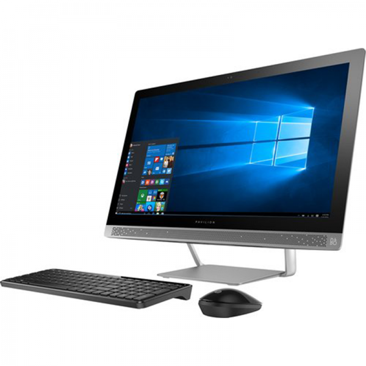

About computers
7/3/2018
Computer
From Wikipedia, the free encyclopedia
"Computer system" redirects here. For other uses, see Computer (disambiguation) and Computer system (disambiguation).
Computer
Acer Aspire 8920 Gemstone.jpgColumbia Supercomputer - NASA Advanced Supercomputing Facility.jpgIntertec Superbrain.jpg
2010-01-26-technikkrempel-by-RalfR-05.jpgThinking Machines Connection Machine CM-5 Frostburg 2.jpgG5 supplying Wikipedia via Gigabit at the Lange Nacht der Wissenschaften 2006 in Dresden.JPG
DM IBM S360.jpgAcorn BBC Master Series Microcomputer.jpgDell PowerEdge Servers.jpg
Computers and computing devices from different eras

A computer is a device that can be instructed to carry out arbitrary sequences of arithmetic or logical operations automatically. The ability of computers to follow generalized sets of operations, called programs, enables them to perform an extremely wide range of tasks.
Such computers are used as control systems for a very wide variety of industrial and consumer devices. This includes simple special purpose devices like microwave ovens and remote controls, factory devices such as industrial robots and computer assisted design, but also in general purpose devices like personal computers and mobile devices such as smartphones. The Internet is run on computers and it connects millions of other computers.
Since ancient times, simple manual devices like the abacus aided people in doing calculations. Early in the Industrial Revolution, some mechanical devices were built to automate long tedious tasks, such as guiding patterns for looms. More sophisticated electrical machines did specialized analog calculations in the early 20th century.
The first digital electronic calculating machines were developed during World War II. The speed, power, and versatility of computers has increased continuously and dramatically since then.
Conventionally, a modern computer consists of at least one processing element, typically a central processing unit (CPU), and some form of memory. The processing element carries out arithmetic and logical operations, and a sequencing and control unit can change the order of operations in response to stored information. Peripheral devices include input devices (keyboards, mice, joystick, etc.), output devices (monitor screens, printers, etc.), and input/output devices that perform both functions (e.g., the 2000s-era touchscreen). Peripheral devices allow information to be retrieved from an external source and they enable the result of operations to be saved and retrieved.